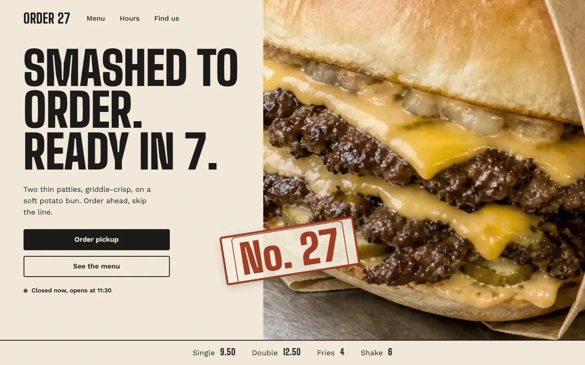
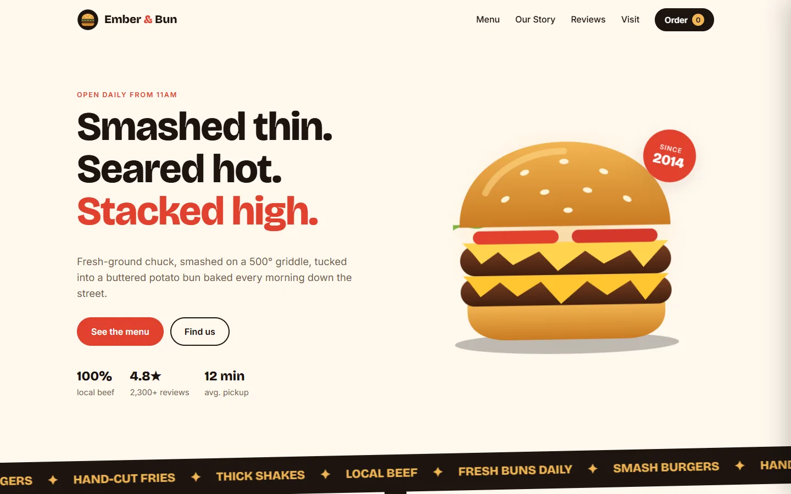
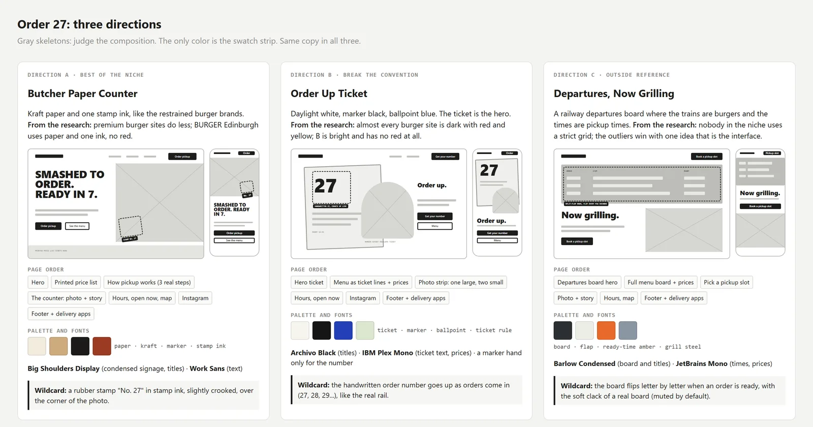
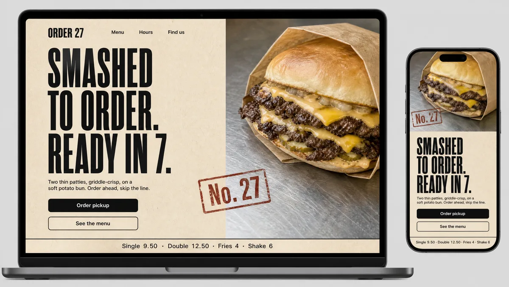
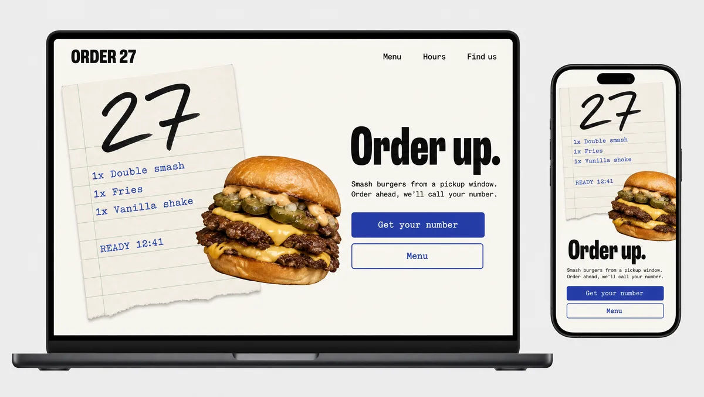
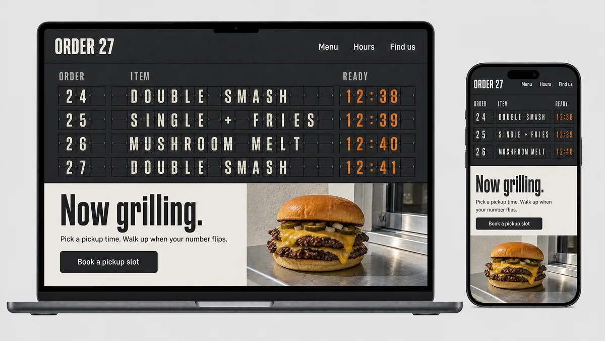

Same prompt. Different designer.
Coding agents design the same page for everyone: centered hero, three cards, gradient, emoji. super-designer is a pair of skills that make your agent research, show you three directions and wait for your choice before writing code.
> Build a website for a burger restaurant.


Drag the line, or focus it and use the arrow keys. Both sites are real and in the repo; nothing was retouched.
The 10 tells
What a page looks like when the agent decides alone. Three or more and it reads as AI-made. Both burger sites, checked by the ai-slop-check skill:
What happened in between
The skill took the same one-line prompt through eight steps. Every file is in examples/burger/.
-
Discover the tools
Lists the skills, MCP servers and browser it has, and recommends installs for what's missing. Asks before installing.
tool-slots.md · discovery.md
-
Brief: 4 questions
A real-world object for the palette (the paper order ticket on the kitchen rail), one feeling, two unexpected influences, and what it must never look like.
brief.md
-
Research the niche
Real burger sites, split into what visitors expect (menu with prices, order button, hours) and what everyone repeats (dark with red and yellow, smoke, grunge).
research.md
-
Three gray skeletons
A: best of the niche. B: breaks its convention. C: borrows from outside it. Composition first, color only in the swatches.

-
One mockup per direction
Generated with the real copy and palette, after showing the cost and getting a yes.



A · B · C -
A person chooses
No code until then. They asked if a burger place shouldn't be warmer, heard why A already was, and picked it.
Stop and waitchoice.md · direction.md
-
Build
Half the effort on the first screen. The stamp from the mockup became the order flow: your ticket gets stamped with your number.
super-designer/site/
-
Review
The 10 tells on the screenshots, a design critique, horizontal scroll at 390 and 1440, the order flow end to end, contrast. Fixes applied, the rest written down.
review.md
Install
Written for Claude Code, with the equivalent for other agents in every step.
Claude Code
# both skills, all projects
npx skills add JouberthAlves/super-designer -g -a claude-code
Or copy skills/super-designer and skills/ai-slop-check into ~/.claude/skills/. Then just ask for a site.
Cursor, Codex, others
npx skills add JouberthAlves/super-designer -a codex
Agents without skills: add a rule that says "for any site or UI, read skills/super-designer/SKILL.md and follow it".
Optional: the starter vault
An Obsidian vault that works as your agent's memory: rules, mistakes, wins and every style you've already used, so it never repeats one. Copy vault/ and open your agent inside it.